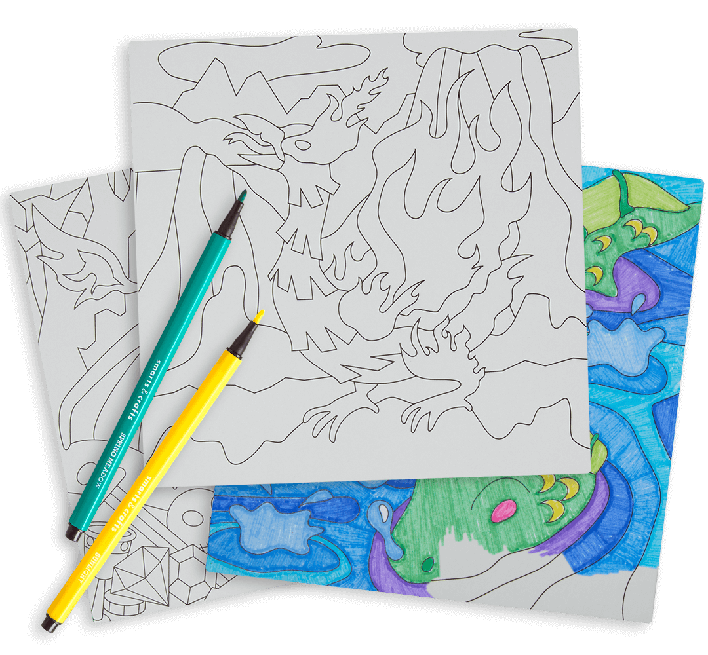
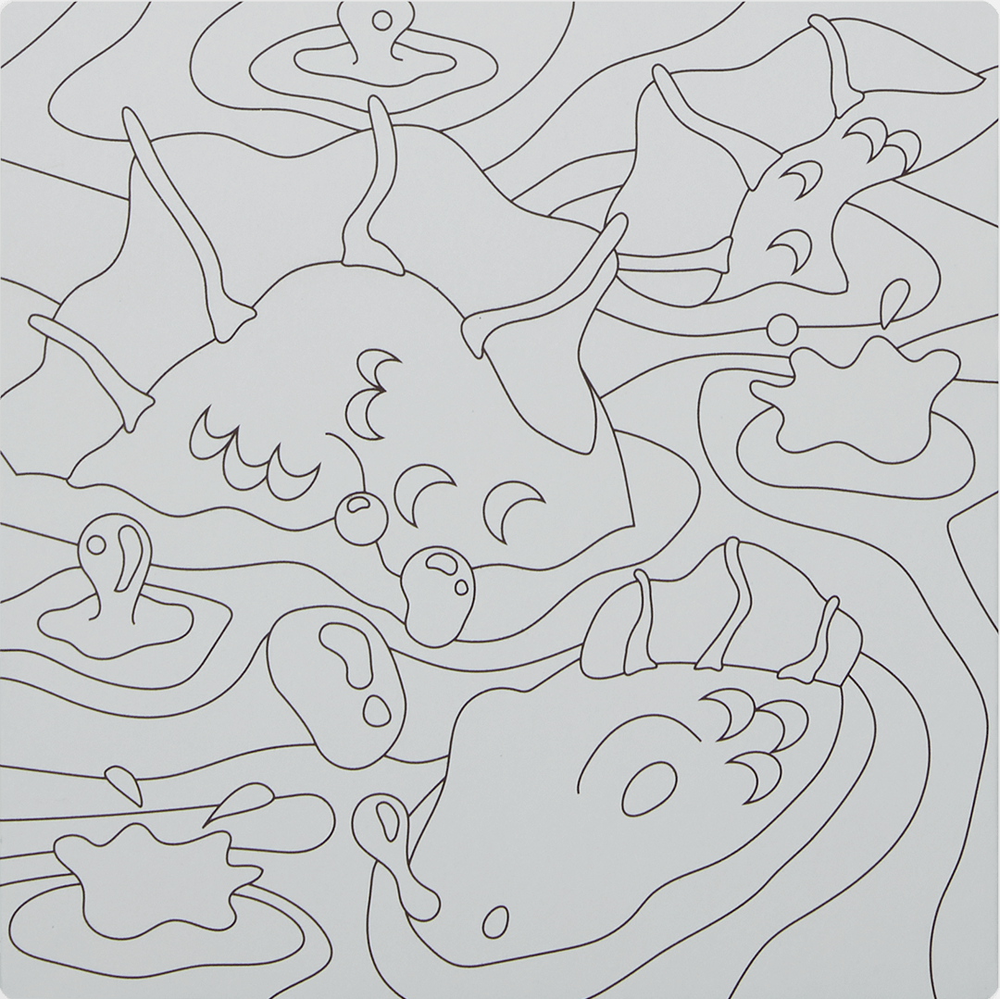
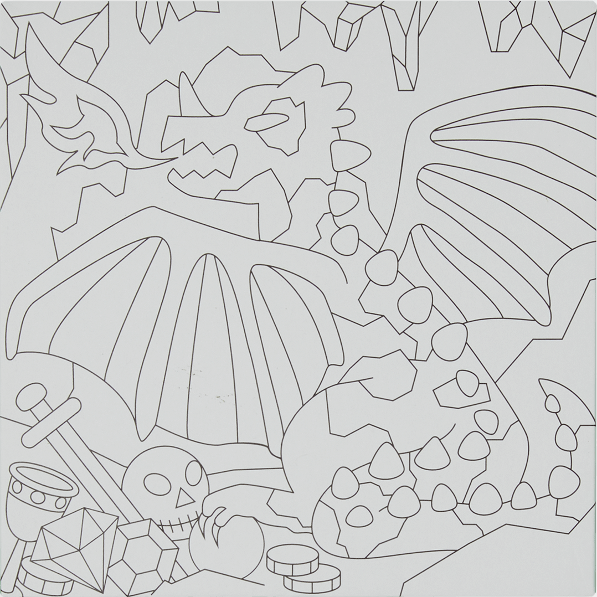
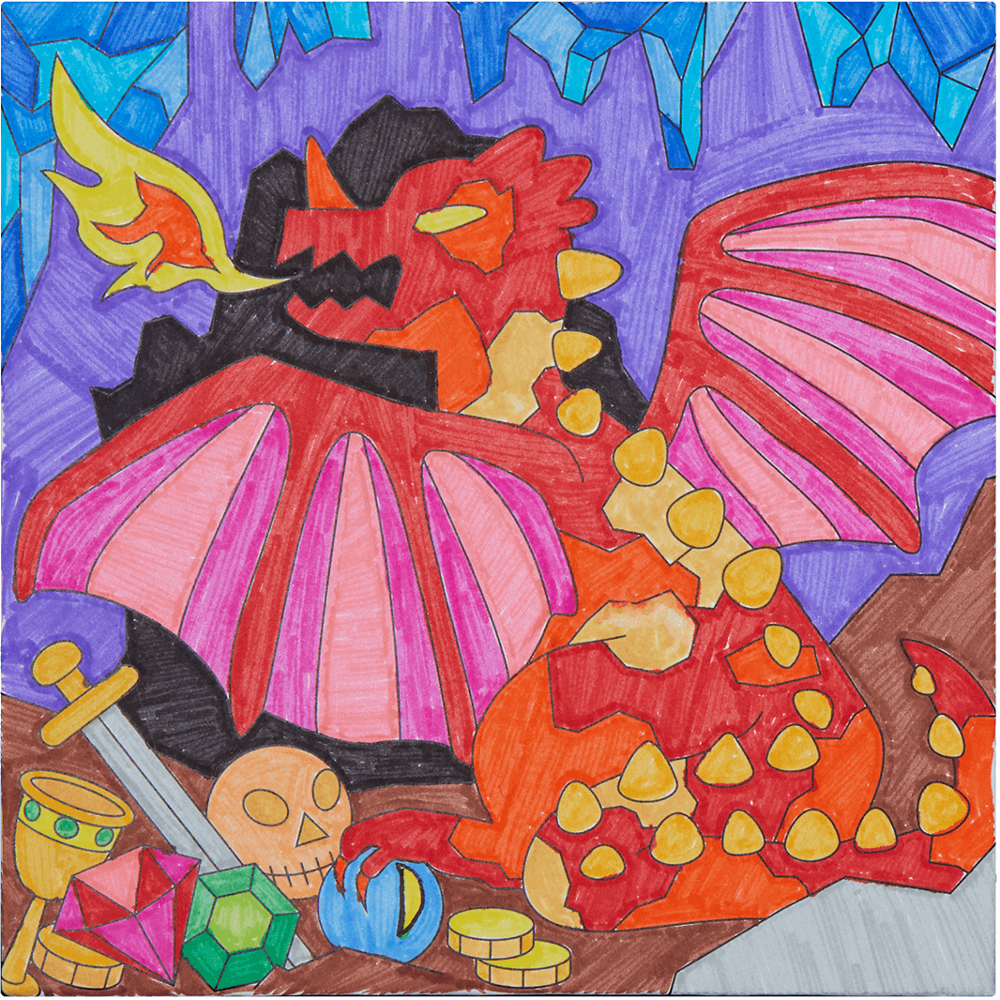

Creature Feature
I collaborated with Sandra Lopez and Valerie Nelson to develop Smarts and Crafts' color-by-number series, Creature Feature. I illustrated three creatures: the Phoenix, Nessie, and Dragon. Other responsibilities included writing copy for the instruction booklet and selecting marker swatches.
Browser: hover to color the beasts!


